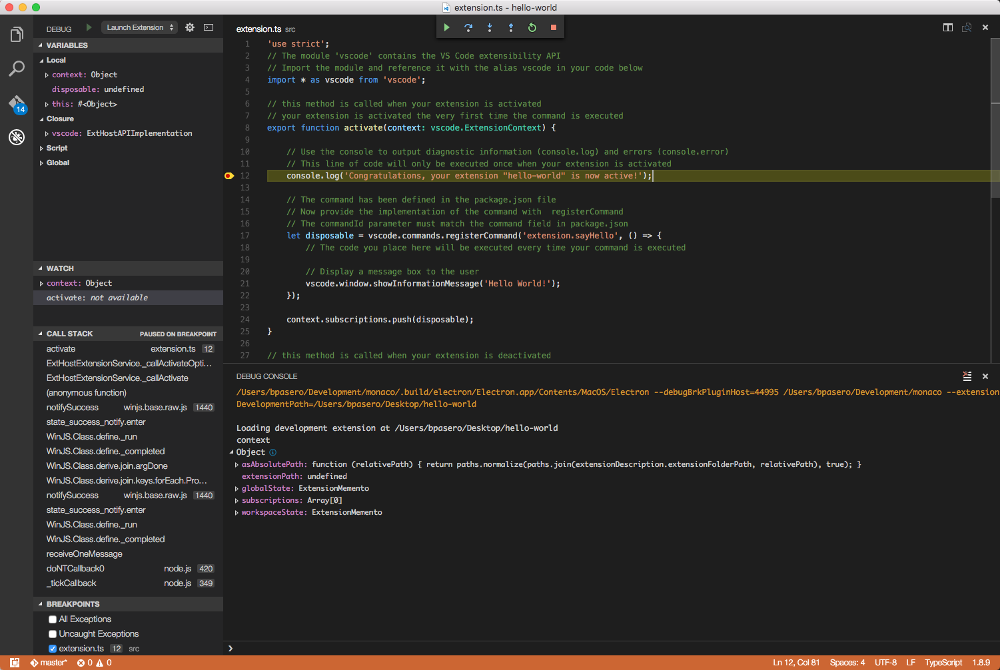

<!DOCTYPE HTML>
<html lang="zh-hans" >
    <head>
        <meta charset="UTF-8">
        <meta content="text/html; charset=utf-8" http-equiv="Content-Type">
        <title>调试-扩展 · vscode-docs</title>
        <meta http-equiv="X-UA-Compatible" content="IE=edge" />
        <meta name="description" content="">
        <meta name="generator" content="GitBook 3.2.3">
        <meta name="author" content="VSCodeContributorsinChina">
        
        
    
    <link rel="stylesheet" href="../../gitbook/style.css">

    
            
                
                <link rel="stylesheet" href="../../gitbook/gitbook-plugin-search-pro/search.css">
                
            
                
                <link rel="stylesheet" href="../../gitbook/gitbook-plugin-intopic-toc/style.css">
                
            
                
                <link rel="stylesheet" href="../../gitbook/gitbook-plugin-highlight/website.css">
                
            
                
                <link rel="stylesheet" href="../../gitbook/gitbook-plugin-fontsettings/website.css">
                
            
        

    

    
        
    
        
    
        
    
        
    
        
    
        
    

        
    
    
    <meta name="HandheldFriendly" content="true"/>
    <meta name="viewport" content="width=device-width, initial-scale=1, user-scalable=no">
    <meta name="apple-mobile-web-app-capable" content="yes">
    <meta name="apple-mobile-web-app-status-bar-style" content="black">
    <link rel="apple-touch-icon-precomposed" sizes="152x152" href="../../gitbook/images/apple-touch-icon-precomposed-152.png">
    <link rel="shortcut icon" href="../../gitbook/images/favicon.ico" type="image/x-icon">

    
    <link rel="next" href="安装-扩展.html" />
    
    
    <link rel="prev" href="范例-调试器.html" />
    

    </head>
    <body>
        
<div class="book">
    <div class="book-summary">
        
            
<div id="book-search-input" role="search">
    <input type="text" placeholder="输入并搜索" />
</div>

            
                <nav role="navigation">
                


<ul class="summary">
    
    

    

    
        
        
    
        <li class="chapter " data-level="1.1" data-path="../../">
            
                <a href="../../">
            
                    
                    简介
            
                </a>
            

            
        </li>
    
        <li class="chapter " data-level="1.2" >
            
                <a target="_blank" href="https://code.visualstudio.com/docs">
            
                    
                    官方文档
            
                </a>
            

            
        </li>
    
        <li class="chapter " data-level="1.3" data-path="../Overview.html">
            
                <a href="../Overview.html">
            
                    
                    概览
            
                </a>
            

            
        </li>
    
        <li class="chapter " data-level="1.4" data-path="../快速入门.md">
            
                <span>
            
                    
                    快速入门(暂无)
            
                </a>
            

            
            <ul class="articles">
                
    
        <li class="chapter " data-level="1.4.1" data-path="../快速入门/介绍视频.html">
            
                <a href="../快速入门/介绍视频.html">
            
                    
                    视频介绍
            
                </a>
            

            
        </li>
    
        <li class="chapter " data-level="1.4.2" data-path="../快速入门/小技巧.html">
            
                <a href="../快速入门/小技巧.html">
            
                    
                    小技巧
            
                </a>
            

            
        </li>
    
        <li class="chapter " data-level="1.4.3" data-path="../快速入门/用户接口.html">
            
                <a href="../快速入门/用户接口.html">
            
                    
                    用户接口
            
                </a>
            

            
        </li>
    
        <li class="chapter " data-level="1.4.4" data-path="../快速入门/主题.html">
            
                <a href="../快速入门/主题.html">
            
                    
                    主题
            
                </a>
            

            
        </li>
    
        <li class="chapter " data-level="1.4.5" data-path="../快速入门/设置.html">
            
                <a href="../快速入门/设置.html">
            
                    
                    设置
            
                </a>
            

            
        </li>
    
        <li class="chapter " data-level="1.4.6" data-path="../快速入门/快捷键绑定.html">
            
                <a href="../快速入门/快捷键绑定.html">
            
                    
                    快捷键绑定
            
                </a>
            

            
        </li>
    
        <li class="chapter " data-level="1.4.7" data-path="../快速入门/语言区域.html">
            
                <a href="../快速入门/语言区域.html">
            
                    
                    语言区域
            
                </a>
            

            
        </li>
    

            </ul>
            
        </li>
    
        <li class="chapter " data-level="1.5" data-path="../../summary/编辑器.html">
            
                <a href="../../summary/编辑器.html">
            
                    
                    编辑器
            
                </a>
            

            
            <ul class="articles">
                
    
        <li class="chapter " data-level="1.5.1" data-path="../编辑器/基础.html">
            
                <a href="../编辑器/基础.html">
            
                    
                    基础
            
                </a>
            

            
        </li>
    
        <li class="chapter " data-level="1.5.2" data-path="../编辑器/安装.html">
            
                <a href="../编辑器/安装.html">
            
                    
                    安装
            
                </a>
            

            
        </li>
    
        <li class="chapter " data-level="1.5.3" data-path="../编辑器/扩展市场.html">
            
                <a href="../编辑器/扩展市场.html">
            
                    
                    扩展市场
            
                </a>
            

            
        </li>
    
        <li class="chapter " data-level="1.5.4" data-path="../编辑器/任务.html">
            
                <a href="../编辑器/任务.html">
            
                    
                    任务
            
                </a>
            

            
        </li>
    
        <li class="chapter " data-level="1.5.5" data-path="../编辑器/调试.html">
            
                <a href="../编辑器/调试.html">
            
                    
                    调试
            
                </a>
            

            
        </li>
    
        <li class="chapter " data-level="1.5.6" data-path="../编辑器/为什么选用VSCode.html">
            
                <a href="../编辑器/为什么选用VSCode.html">
            
                    
                    为什么选用VSCode
            
                </a>
            

            
        </li>
    
        <li class="chapter " data-level="1.5.7" data-path="../编辑器/版本控制.html">
            
                <a href="../编辑器/版本控制.html">
            
                    
                    版本控制
            
                </a>
            

            
        </li>
    
        <li class="chapter " data-level="1.5.8" data-path="../编辑器/易用性.html">
            
                <a href="../编辑器/易用性.html">
            
                    
                    易用性
            
                </a>
            

            
        </li>
    
        <li class="chapter " data-level="1.5.9" data-path="../编辑器/与时俱进的编辑体验.html">
            
                <a href="../编辑器/与时俱进的编辑体验.html">
            
                    
                    与时俱进的编辑体验
            
                </a>
            

            
        </li>
    

            </ul>
            
        </li>
    
        <li class="chapter " data-level="1.6" data-path="../../summary/定制化.html">
            
                <a href="../../summary/定制化.html">
            
                    
                    定制化
            
                </a>
            

            
            <ul class="articles">
                
    
        <li class="chapter " data-level="1.6.1" data-path="../定制化/概述.html">
            
                <a href="../定制化/概述.html">
            
                    
                    概述
            
                </a>
            

            
        </li>
    
        <li class="chapter " data-level="1.6.2" data-path="../定制化/用户和工作空间.html">
            
                <a href="../定制化/用户和工作空间.html">
            
                    
                    用户和工作空间
            
                </a>
            

            
        </li>
    
        <li class="chapter " data-level="1.6.3" data-path="../定制化/快捷键绑定.html">
            
                <a href="../定制化/快捷键绑定.html">
            
                    
                    快捷键绑定
            
                </a>
            

            
        </li>
    
        <li class="chapter " data-level="1.6.4" data-path="../定制化/用户定义代码段.html">
            
                <a href="../定制化/用户定义代码段.html">
            
                    
                    用户定义代码段
            
                </a>
            

            
        </li>
    
        <li class="chapter " data-level="1.6.5" data-path="../定制化/调色板.html">
            
                <a href="../定制化/调色板.html">
            
                    
                    调色板
            
                </a>
            

            
        </li>
    
        <li class="chapter " data-level="1.6.6" data-path="../定制化/主题.html">
            
                <a href="../定制化/主题.html">
            
                    
                    主题
            
                </a>
            

            
        </li>
    
        <li class="chapter " data-level="1.6.7" data-path="../定制化/语言区域.html">
            
                <a href="../定制化/语言区域.html">
            
                    
                    语言区域
            
                </a>
            

            
        </li>
    

            </ul>
            
        </li>
    
        <li class="chapter " data-level="1.7" data-path="../../summary/工具.html">
            
                <a href="../../summary/工具.html">
            
                    
                    工具
            
                </a>
            

            
            <ul class="articles">
                
    
        <li class="chapter " data-level="1.7.1" data-path="../工具/vse命令行工具.html">
            
                <a href="../工具/vse命令行工具.html">
            
                    
                    vse命令行工具
            
                </a>
            

            
        </li>
    
        <li class="chapter " data-level="1.7.2" data-path="../工具/yocode扩展生成器.html">
            
                <a href="../工具/yocode扩展生成器.html">
            
                    
                    yocode扩展生成器
            
                </a>
            

            
        </li>
    
        <li class="chapter " data-level="1.7.3" data-path="../工具/范例.html">
            
                <a href="../工具/范例.html">
            
                    
                    范例
            
                </a>
            

            
        </li>
    

            </ul>
            
        </li>
    
        <li class="chapter " data-level="1.8" data-path="../../summary/技术支持.html">
            
                <a href="../../summary/技术支持.html">
            
                    
                    技术支持
            
                </a>
            

            
            <ul class="articles">
                
    
        <li class="chapter " data-level="1.8.1" data-path="../技术支持/常见问题.html">
            
                <a href="../技术支持/常见问题.html">
            
                    
                    常见问题
            
                </a>
            

            
        </li>
    
        <li class="chapter " data-level="1.8.2" data-path="../技术支持/错误代码.html">
            
                <a href="../技术支持/错误代码.html">
            
                    
                    错误代码
            
                </a>
            

            
        </li>
    
        <li class="chapter " data-level="1.8.3" data-path="../技术支持/如何升级.html">
            
                <a href="../技术支持/如何升级.html">
            
                    
                    如何升级
            
                </a>
            

            
        </li>
    
        <li class="chapter " data-level="1.8.4" data-path="../技术支持/系统要求.html">
            
                <a href="../技术支持/系统要求.html">
            
                    
                    系统要求
            
                </a>
            

            
        </li>
    

            </ul>
            
        </li>
    
        <li class="chapter " data-level="1.9" data-path="../../summary/扩展.html">
            
                <a href="../../summary/扩展.html">
            
                    
                    扩展
            
                </a>
            

            
            <ul class="articles">
                
    
        <li class="chapter " data-level="1.9.1" data-path="概述.html">
            
                <a href="概述.html">
            
                    
                    概述
            
                </a>
            

            
        </li>
    
        <li class="chapter " data-level="1.9.2" data-path="范例-hello-world.html">
            
                <a href="范例-hello-world.html">
            
                    
                    范例-hello-world
            
                </a>
            

            
        </li>
    
        <li class="chapter " data-level="1.9.3" data-path="范例-word-count.html">
            
                <a href="范例-word-count.html">
            
                    
                    范例-word-count
            
                </a>
            

            
        </li>
    
        <li class="chapter " data-level="1.9.4" data-path="范例-language-server.html">
            
                <a href="范例-language-server.html">
            
                    
                    范例-language-server
            
                </a>
            

            
        </li>
    
        <li class="chapter " data-level="1.9.5" data-path="范例-调试器.html">
            
                <a href="范例-调试器.html">
            
                    
                    范例-调试器
            
                </a>
            

            
        </li>
    
        <li class="chapter active" data-level="1.9.6" data-path="调试-扩展.html">
            
                <a href="调试-扩展.html">
            
                    
                    调试-扩展
            
                </a>
            

            
        </li>
    
        <li class="chapter " data-level="1.9.7" data-path="安装-扩展.html">
            
                <a href="安装-扩展.html">
            
                    
                    安装-扩展
            
                </a>
            

            
        </li>
    
        <li class="chapter " data-level="1.9.8" data-path="范式-原则.html">
            
                <a href="范式-原则.html">
            
                    
                    范式-原则
            
                </a>
            

            
        </li>
    
        <li class="chapter " data-level="1.9.9" data-path="测试-扩展.html">
            
                <a href="测试-扩展.html">
            
                    
                    测试-扩展
            
                </a>
            

            
        </li>
    
        <li class="chapter " data-level="1.9.10" data-path="用我们的方法创造扩展.html">
            
                <a href="用我们的方法创造扩展.html">
            
                    
                    用我们的方法创造扩展
            
                </a>
            

            
        </li>
    

            </ul>
            
        </li>
    
        <li class="chapter " data-level="1.10" data-path="../../summary/扩展API.html">
            
                <a href="../../summary/扩展API.html">
            
                    
                    扩展API
            
                </a>
            

            
            <ul class="articles">
                
    
        <li class="chapter " data-level="1.10.1" data-path="../扩展API/概述.html">
            
                <a href="../扩展API/概述.html">
            
                    
                    概述
            
                </a>
            

            
        </li>
    
        <li class="chapter " data-level="1.10.2" data-path="../扩展API/扩展manifest文件.html">
            
                <a href="../扩展API/扩展manifest文件.html">
            
                    
                    扩展manifest文件
            
                </a>
            

            
        </li>
    
        <li class="chapter " data-level="1.10.3" data-path="../扩展API/扩展点.html">
            
                <a href="../扩展API/扩展点.html">
            
                    
                    扩展点
            
                </a>
            

            
        </li>
    
        <li class="chapter " data-level="1.10.4" data-path="../扩展API/激活事件.html">
            
                <a href="../扩展API/激活事件.html">
            
                    
                    激活事件
            
                </a>
            

            
        </li>
    
        <li class="chapter " data-level="1.10.5" data-path="../扩展API/vscode-api.html">
            
                <a href="../扩展API/vscode-api.html">
            
                    
                    vscode-api
            
                </a>
            

            
        </li>
    
        <li class="chapter " data-level="1.10.6" data-path="../扩展API/vscode-api-命令.html">
            
                <a href="../扩展API/vscode-api-命令.html">
            
                    
                    vscode-api-命令
            
                </a>
            

            
        </li>
    
        <li class="chapter " data-level="1.10.7" data-path="../扩展API/api调试.html">
            
                <a href="../扩展API/api调试.html">
            
                    
                    api调试
            
                </a>
            

            
        </li>
    

            </ul>
            
        </li>
    
        <li class="chapter " data-level="1.11" data-path="../../summary/语言.html">
            
                <a href="../../summary/语言.html">
            
                    
                    语言
            
                </a>
            

            
            <ul class="articles">
                
    
        <li class="chapter " data-level="1.11.1" data-path="../语言/概述.html">
            
                <a href="../语言/概述.html">
            
                    
                    概述
            
                </a>
            

            
        </li>
    
        <li class="chapter " data-level="1.11.2" data-path="../语言/javascript.html">
            
                <a href="../语言/javascript.html">
            
                    
                    Javascript
            
                </a>
            

            
        </li>
    
        <li class="chapter " data-level="1.11.3" data-path="../语言/json.html">
            
                <a href="../语言/json.html">
            
                    
                    JSON
            
                </a>
            

            
        </li>
    
        <li class="chapter " data-level="1.11.4" data-path="../语言/html.html">
            
                <a href="../语言/html.html">
            
                    
                    HTML(暂无)
            
                </a>
            

            
        </li>
    
        <li class="chapter " data-level="1.11.5" data-path="../语言/css.html">
            
                <a href="../语言/css.html">
            
                    
                    CSS, Sass and Less
            
                </a>
            

            
        </li>
    
        <li class="chapter " data-level="1.11.6" data-path="../语言/typescript.html">
            
                <a href="../语言/typescript.html">
            
                    
                    TypeScript
            
                </a>
            

            
        </li>
    
        <li class="chapter " data-level="1.11.7" data-path="../语言/markdown.html">
            
                <a href="../语言/markdown.html">
            
                    
                    Markdown
            
                </a>
            

            
        </li>
    
        <li class="chapter " data-level="1.11.8" data-path="../语言/cpp.html">
            
                <a href="../语言/cpp.html">
            
                    
                    C++
            
                </a>
            

            
        </li>
    
        <li class="chapter " data-level="1.11.9" data-path="../语言/java.md">
            
                <span>
            
                    
                    Java(暂无)
            
                </a>
            

            
        </li>
    
        <li class="chapter " data-level="1.11.10" data-path="../语言/php.html">
            
                <a href="../语言/php.html">
            
                    
                    PHP
            
                </a>
            

            
        </li>
    
        <li class="chapter " data-level="1.11.11" data-path="../语言/python.html">
            
                <a href="../语言/python.html">
            
                    
                    Python
            
                </a>
            

            
        </li>
    
        <li class="chapter " data-level="1.11.12" data-path="../语言/go.md">
            
                <span>
            
                    
                    Go(暂无)
            
                </a>
            

            
        </li>
    
        <li class="chapter " data-level="1.11.13" data-path="../语言/dockerfile.html">
            
                <a href="../语言/dockerfile.html">
            
                    
                    Dockerfile
            
                </a>
            

            
        </li>
    
        <li class="chapter " data-level="1.11.14" data-path="../语言/t-sql.md">
            
                <span>
            
                    
                    T-SQL(暂无)
            
                </a>
            

            
        </li>
    
        <li class="chapter " data-level="1.11.15" data-path="../语言/csharp.html">
            
                <a href="../语言/csharp.html">
            
                    
                    C#
            
                </a>
            

            
        </li>
    

            </ul>
            
        </li>
    
        <li class="chapter " data-level="1.12" data-path="../../summary/运行时.html">
            
                <a href="../../summary/运行时.html">
            
                    
                    运行时
            
                </a>
            

            
            <ul class="articles">
                
    
        <li class="chapter " data-level="1.12.1" data-path="../运行时/nodejs.html">
            
                <a href="../运行时/nodejs.html">
            
                    
                    nodejs
            
                </a>
            

            
        </li>
    
        <li class="chapter " data-level="1.12.2" data-path="../运行时/ASPnet5.html">
            
                <a href="../运行时/ASPnet5.html">
            
                    
                    ASPnet5
            
                </a>
            

            
        </li>
    
        <li class="chapter " data-level="1.12.3" data-path="../运行时/unity.html">
            
                <a href="../运行时/unity.html">
            
                    
                    unity
            
                </a>
            

            
        </li>
    
        <li class="chapter " data-level="1.12.4" data-path="../运行时/office.html">
            
                <a href="../运行时/office.html">
            
                    
                    office
            
                </a>
            

            
        </li>
    

            </ul>
            
        </li>
    

    

    <li class="divider"></li>

    <li>
        <a href="https://www.gitbook.com" target="blank" class="gitbook-link">
            本书使用 GitBook 发布
        </a>
    </li>
</ul>


                </nav>
            
        
    </div>

    <div class="book-body">
        
            <div class="body-inner">
                
                    

<div class="book-header" role="navigation">
    

    <!-- Title -->
    <h1>
        <i class="fa fa-circle-o-notch fa-spin"></i>
        <a href="../.." >调试-扩展</a>
    </h1>
</div>


                    <div class="page-wrapper" tabindex="-1" role="main">
                        <div class="page-inner">
                            
<div id="book-search-results">
    <div class="search-noresults">
    
                                <section class="normal markdown-section">
                                
                                <h1 id="&#x6269;&#x5C55;&#xFF08;&#x4EE5;&#x4E0B;&#x7B80;&#x79F0;&#xFF1A;&#x63D2;&#x4EF6;&#xFF09;&#x8FD0;&#x884C;&#x548C;&#x8C03;&#x8BD5;">&#x6269;&#x5C55;&#xFF08;&#x4EE5;&#x4E0B;&#x7B80;&#x79F0;&#xFF1A;&#x63D2;&#x4EF6;&#xFF09;&#x8FD0;&#x884C;&#x548C;&#x8C03;&#x8BD5;</h1>
<p>&#x4F60;&#x53EF;&#x4EE5;&#x4F7F;&#x7528;VS Code&#x6765;&#x5F00;&#x53D1;&#x4E00;&#x4E2A;&#x63D2;&#x4EF6;&#xFF0C;&#x800C;&#x4E14;VS Code&#x4E5F;&#x63D0;&#x4F9B;&#x4E86;&#x51E0;&#x4E2A;&#x7B80;&#x5316;&#x5F00;&#x53D1;&#x7684;&#x5DE5;&#x5177;&#xFF1A;</p>
<ul>
<li>Yeoman &#x751F;&#x6210;&#x5668; to &#x7ED9;&#x63D2;&#x4EF6;&#x63D0;&#x4F9B;&#x811A;&#x624B;&#x67B6;</li>
<li>&#x667A;&#x80FD;&#x5316;&#xFF0C;&#x8FD8;&#x6709;&#x9488;&#x5BF9;&#x63D2;&#x4EF6; API &#x7684;&#x4EE3;&#x7801;&#x5BFC;&#x822A;</li>
<li>&#x7F16;&#x8BD1; TypeScript&#xFF08;&#x5F53;&#x7528; TypeScript &#x5B9E;&#x73B0;&#x7684;&#x65F6;&#x5019;&#xFF09;</li>
<li>&#x63D2;&#x4EF6;&#x8FD0;&#x884C;&#x548C;&#x8C03;&#x8BD5;</li>
<li>&#x63D2;&#x4EF6;&#x53D1;&#x5E03;</li>
</ul>
<h2 id="&#x751F;&#x6210;&#x4E00;&#x4E2A;&#x63D2;&#x4EF6;">&#x751F;&#x6210;&#x4E00;&#x4E2A;&#x63D2;&#x4EF6;</h2>
<p>&#x6211;&#x4EEC;&#x5EFA;&#x8BAE;&#x4F60;&#x901A;&#x8FC7;&#x57FA;&#x672C;&#x6587;&#x4EF6;&#x811A;&#x624B;&#x67B6;&#x5316;&#x6765;&#x5F00;&#x59CB;&#x3002;&#x4F60;&#x53EF;&#x4EE5;&#x4F7F;&#x7528;<code>yo code</code> Yeoman &#x751F;&#x6210;&#x5668;&#x6765;&#x505A;&#x5230;&#xFF0C;&#x800C;&#x4E14;&#x6211;&#x4EEC;&#x5728;<a href="../../docs/tools/yocode.md">Yo Code &#x6587;&#x6863;</a>&#x4E2D;&#x63CF;&#x8FF0;&#x4E86;&#x7EC6;&#x8282;&#x3002;&#x751F;&#x6210;&#x5668;&#x4F1A;&#x4FDD;&#x8BC1;&#x4E00;&#x5207;&#x5C31;&#x7EEA;&#xFF0C;&#x5F00;&#x53D1;&#x4F53;&#x9A8C;&#x826F;&#x597D;&#x3002;</p>
<h2 id="&#x63D2;&#x4EF6;&#x8FD0;&#x884C;&#x548C;&#x8C03;&#x8BD5;">&#x63D2;&#x4EF6;&#x8FD0;&#x884C;&#x548C;&#x8C03;&#x8BD5;</h2>
<p>&#x4F60;&#x53EF;&#x4EE5;&#x6309;&#x4E0B;<code>F5</code>&#xFF0C;&#x5728;&#x8C03;&#x8BD5;&#x5668;&#x4E0B;&#x8F7B;&#x6613;&#x5730;&#x8FD0;&#x884C;&#x8FD0;&#x884C;&#x3002;&#x8FD9;&#x4F1A;&#x6253;&#x5F00;&#x4E00;&#x4E2A;&#x52A0;&#x8F7D;&#x597D;&#x63D2;&#x4EF6;&#x7684; VS Code &#x7A97;&#x53E3;&#x3002;&#x63D2;&#x4EF6;&#x8F93;&#x51FA;&#x5728;&#x8C03;&#x8BD5;&#x63A7;&#x5236;&#x53F0;&#x3002;&#x652F;&#x6301;&#x5728;&#x8C03;&#x8BD5;&#x89C6;&#x56FE;&#x6216;&#x8005;&#x8C03;&#x8BD5;&#x63A7;&#x5236;&#x53F0;&#x8BBE;&#x7F6E;&#x65AD;&#x70B9;&#xFF0C;&#x5355;&#x6B65;&#x8C03;&#x8BD5;&#xFF0C;&#x67E5;&#x770B;&#x53D8;&#x91CF;&#x3002;</p>
<p></p>
<p>&#x6211;&#x4EEC;&#x6765;&#x770B;&#x770B;&#x5E55;&#x540E;&#x5C06;&#x8981;&#x53D1;&#x751F;&#x4EC0;&#x4E48;&#x3002;&#x5982;&#x679C;&#x4F60;&#x7528; TypeScript &#x6765;&#x5199;&#x63D2;&#x4EF6;&#x90A3;&#x4E48;&#x4F60;&#x7684;&#x4EE3;&#x7801;&#x5FC5;&#x987B;&#x5148;&#x7F16;&#x8BD1;&#x6210; JavaScript&#x3002;</p>
<h2 id="&#x7F16;&#x8BD1;-typescript">&#x7F16;&#x8BD1; TypeScript</h2>
<p>&#x751F;&#x6210;&#x597D;&#x7684;&#x63D2;&#x4EF6;&#x5185;&#x7684;TypeScript &#x7F16;&#x8BD1;&#x50CF;&#x4E0B;&#x9762;&#x8FD9;&#x6837;&#x8BBE;&#x7F6E;&#x597D;</p>
<ul>
<li><code>tsconfig.json</code>&#x58F0;&#x660E;&#x4E86; TypeScript &#x7F16;&#x8BD1;&#x5668;&#x7684;&#x7F16;&#x8BD1;&#x9009;&#x9879;&#x3002;&#x66F4;&#x591A;&#x8BF7;&#x770B;<a href="https://github.com/Microsoft/TypeScript/wiki/tsconfig.json" target="_blank">TypeScript wiki</a> &#x6216;&#x8005;&#x5728;&#x6211;&#x4EEC;&#x7684;<a href="../../docs/languages/typescript.md#tsconfigjson">TypeScript&#x7AE0;&#x8282;</a>&#x3002;</li>
<li>&#x5408;&#x9002;&#x7248;&#x672C;&#x7684;TypeScript&#x7F16;&#x8BD1;&#x5668;&#x5305;&#x542B;&#x5728; node_modules &#x6587;&#x4EF6;&#x5939;&#x5185;&#x3002;</li>
<li><code>typings/vscode-typings.d.ts</code>: &#x544A;&#x8BC9;TypeScript &#x7F16;&#x8BD1;&#x5668;&#x8981;&#x5305;&#x542B;<code>vscode</code> API &#x58F0;&#x660E;&#x3002;</li>
<li>API &#x58F0;&#x660E; &#x5305;&#x542B;&#x5728; <code>node_modules/vscode</code>&#x3002;</li>
</ul>
<p>&#x5728;&#x8FD0;&#x884C;&#x63D2;&#x4EF6;&#x4E4B;&#x524D;TypeScript &#x7F16;&#x8BD1;&#x4F1A;&#x88AB;&#x89E6;&#x53D1;&#x3002;
&#x8FD9;&#x662F;&#x901A;&#x8FC7;<code>.vscode/launch.json</code>&#x6587;&#x4EF6;&#x5185;&#x7684;<code>preLaunchTask</code>&#x5C5E;&#x6027;&#xFF08;&#x58F0;&#x660E;&#x4E86;&#x4E00;&#x4E2A;&#x5728;&#x542F;&#x52A8;&#x8C03;&#x8BD5;&#x4E4B;&#x524D;&#x6267;&#x884C;&#x7684;&#x4EFB;&#x52A1;&#xFF09; &#x3002;&#x8FD9;&#x4E2A;&#x4EFB;&#x52A1;&#x5728;<code>.vscode/tasks.json</code>&#x5185;&#x90E8;&#x5B9A;&#x4E49;&#x3002;</p>
<blockquote>
<p><strong>&#x8BF4;&#x660E;:</strong> TypeScript &#x7F16;&#x8BD1;&#x5668;&#x5728;&#x76D1;&#x89C6;&#x6A21;&#x5F0F;&#x89E6;&#x53D1;&#xFF0C;&#x5C31;&#x80FD;&#x591F;&#x5728;&#x6587;&#x4EF6;&#x53D8;&#x52A8;&#x65F6;&#x91CD;&#x65B0;&#x7F16;&#x8BD1;&#x3002;</p>
</blockquote>
<h2 id="&#x63D2;&#x4EF6;&#x542F;&#x52A8;">&#x63D2;&#x4EF6;&#x542F;&#x52A8;</h2>
<p>&#x63D2;&#x4EF6;&#x5728;&#x4E00;&#x4E2A;&#x5E26;&#x6709;<code>Extension Development Host</code>&#x6807;&#x9898;&#x7684;&#x7A97;&#x53E3;&#x5185;&#x542F;&#x52A8;&#x3002;&#x8BE5;&#x7A97;&#x53E3;&#x8FD0;&#x884C;&#x7740; VS Code&#xFF0C;&#x66F4;&#x51C6;&#x786E;&#x7684;&#x8BF4;&#xFF0C;&#x662F;&#x5E26;&#x6709;&#x5F00;&#x53D1;&#x6A21;&#x5F0F;&#x63D2;&#x4EF6;&#x7684;<code>Extension Host</code>&#x3002;</p>
<p>&#x53EF;&#x4EE5;&#x5728;&#x547D;&#x4EE4;&#x884C;&#x901A;&#x8FC7;<code>extensionDevelopmentPath</code>&#x9009;&#x9879;&#x5B9E;&#x73B0;&#x540C;&#x6837;&#x7684;&#x6548;&#x679C;&#x3002;&#x8BE5;&#x9009;&#x9879;&#x544A;&#x8BC9; VS Code &#x641C;&#x5BFB;&#x63D2;&#x4EF6;&#x7684;&#x4F4D;&#x7F6E;&#xFF0C;&#x6BD4;&#x5982;&#xFF0C;</p>
<blockquote>
<p><code>code --extensionDevelopmentPath=_my_extension_folder</code>.</p>
</blockquote>
<p>&#x4E00;&#x65E6;<code>Extension Host</code>&#x542F;&#x52A8;&#x4E86;&#xFF0C;VS Code &#x5C31;&#x628A;&#x8C03;&#x8BD5;&#x5668;&#x9644;&#x52A0;&#x4E8E;&#x5176;&#x4E0A;&#xFF0C;&#x542F;&#x52A8;&#x8C03;&#x8BD5;&#x3002;</p>
<p>&#x8FD9;&#x662F;&#x6309;&#x4E0B;<code>F5</code>&#x540E;&#x53D1;&#x751F;&#x7684;&#xFF1A;</p>
<ol>
<li><code>.vscode/launch.json</code> &#x544A;&#x77E5;&#x8981;&#x9996;&#x6B21;&#x8FD0;&#x884C; <code>npm</code>&#x547D;&#x4EE4;&#x3002;</li>
<li><code>.vscode/tasks.json</code> &#x901A;&#x8FC7;&#x811A;&#x672C;&#x547D;&#x4EE4; <code>npm run compile</code>&#xFF0C;&#x58F0;&#x660E;&#x4E86; <code>npm</code> &#x4EFB;&#x52A1;&#x3002;</li>
<li><code>package.json</code> &#x58F0;&#x660E;<code>compile</code>&#x811A;&#x672C;&#xFF0C; &#x505A;&#x4E3A; <code>node ./node_modules/vscode/bin/compile -watch -p ./</code>&#x3002;</li>
<li>&#x8FD9;&#x4F1A;&#x6700;&#x7EC8;&#x8C03;&#x7528;&#x5305;&#x542B;&#x5728; node_modules &#x7684;TypeScript &#x7F16;&#x8BD1;&#x5668;, &#x751F;&#x6210;&#x4E86; <code>out/src/extension.js</code> &#x548C; <code>out/src/extension.js.map</code>&#x3002;</li>
<li>&#x4E00;&#x65E6;TypeScript &#x7F16;&#x8BD1;&#x4EFB;&#x52A1;&#x7ED3;&#x675F;,<code>code --extensionDevelopmentPath=${workspaceRoot}</code> &#x8FDB;&#x7A0B;&#x542F;&#x52A8;&#x3002;</li>
<li>VS Code &#x7684;&#x7B2C;&#x4E8C;&#x4E2A;&#x5B9E;&#x4F8B;&#x5728;&#x4E00;&#x4E2A;&#x7279;&#x6B8A;&#x7A97;&#x53E3;&#x4E2D;&#x542F;&#x52A8;&#xFF0C;&#x7136;&#x540E;&#x5BFB;&#x627E;&#x4E00;&#x4E2A;<code>${workspaceRoot}</code>&#x76EE;&#x5F55;&#x4E0B;&#x7684;&#x63D2;&#x4EF6;&#x3002;</li>
</ol>
<h2 id="&#x63D2;&#x4EF6;&#x70ED;&#x52A0;&#x8F7D;">&#x63D2;&#x4EF6;&#x70ED;&#x52A0;&#x8F7D;</h2>
<p>&#x56E0;&#x4E3A; TypeScript &#x7F16;&#x8BD1;&#x5668;&#x5728;&#x76D1;&#x89C6;&#x6A21;&#x5F0F;&#x4E0B;&#x8FD0;&#x884C;&#xFF0C;&#x6240;&#x4EE5; TypeScript &#x6587;&#x4EF6;&#x4F1A;&#x5728;&#x4F60;&#x6539;&#x52A8;&#x65F6;&#x81EA;&#x52A8;&#x7F16;&#x8BD1;&#x3002;&#x53EF;&#x4EE5;&#x5728; VS Code &#x5DE6;&#x4FA7;&#x72B6;&#x6001;&#x680F;&#x91CC;&#x89C2;&#x5BDF;&#x7F16;&#x8BD1;&#x8FDB;&#x7A0B;&#x3002;&#x5F53;&#x7F16;&#x8BD1;&#x6CA1;&#x6709;&#x9519;&#x8BEF;&#x5730;&#x7ED3;&#x675F;&#x65F6;&#xFF0C;&#x4F60;&#x5FC5;&#x987B;&#x91CD;&#x65B0;&#x52A0;&#x8F7D;<code>Extension Development Host</code>&#x6765;&#x786E;&#x4FDD;&#x5B83;&#x53D1;&#x73B0;&#x4E86;&#x4F60;&#x7684;&#x6539;&#x53D8;&#x3002;&#x4F60;&#x53EF;&#x4EE5;&#x6709;&#x4EE5;&#x4E0B;&#x9009;&#x9879;&#xFF1A;</p>
<ul>
<li>&#x70B9;&#x51FB;&#x8C03;&#x8BD5;&#x91CD;&#x542F;&#xFF0C;&#x91CD;&#x65B0;&#x542F;&#x52A8;&#x63D2;&#x4EF6;&#x5F00;&#x53D1;&#x4E3B;&#x673A;&#x7A97;&#x53E3;&#x3002;</li>
<li>&#x5728;&#x63D2;&#x4EF6;&#x5F00;&#x53D1;&#x4E3B;&#x673A;&#x7A97;&#x53E3;&#x5185;&#x6309;&#x4E0B; <code>kbstyle(Ctrl+R)</code> (Mac: <code>kbstyle(Cmd+R)</code>)&#x3002;</li>
</ul>
<h2 id="&#x4E0B;&#x4E00;&#x6B65;">&#x4E0B;&#x4E00;&#x6B65;</h2>
<ul>
<li><a href="../../docs/extensions/testing-extensions.md">&#x63D2;&#x4EF6;&#x6D4B;&#x8BD5;</a> - &#x5B66;&#x4E60;&#x5982;&#x4F55;&#x5199;&#x63D2;&#x4EF6;&#x7684;&#x5355;&#x5143;&#x548C;&#x96C6;&#x6210;&#x6D4B;&#x8BD5;&#x3002;</li>
<li><a href="../../docs/tools/vscecli.md">&#x53D1;&#x5E03;&#x5DE5;&#x5177;</a> - vsce&#x547D;&#x4EE4;&#x884C;&#x5DE5;&#x5177;&#x6765;&#x53D1;&#x5E03;&#x63D2;&#x4EF6;</li>
<li><a href="../../docs/extensionAPI/extension-manifest.md">&#x63D2;&#x4EF6;&#x6E05;&#x5355;&#x6587;&#x4EF6;</a> - VS Code &#x63D2;&#x4EF6;&#x6E05;&#x5355;&#x6587;&#x4EF6;&#x6307;&#x5357;</li>
<li><a href="../../docs/extensionAPI/overview.md">&#x63D2;&#x4EF6;API</a> - &#x4E86;&#x89E3;VS Code &#x53EF;&#x6269;&#x5C55;&#x7684; API</li>
</ul>
<h2 id="&#x5E38;&#x89C1;&#x95EE;&#x9898;">&#x5E38;&#x89C1;&#x95EE;&#x9898;</h2>
<p><strong>&#x95EE;: &#x6211;&#x5982;&#x4F55;&#x624D;&#x80FD;&#x5728;&#x6211;&#x7684;&#x63D2;&#x4EF6;&#x4F7F;&#x7528;VS Code &#x65B0;&#x7248;&#x672C;&#x4E2D;&#x5F15;&#x5165;&#x7684; API?</strong></p>
<p><strong>&#x7B54;:</strong> &#x5982;&#x679C;&#x4F60;&#x7684;&#x63D2;&#x4EF6;&#x4F7F;&#x7528;VS Code &#x65B0;&#x7248;&#x672C;&#x4E2D;&#x5F15;&#x5165;&#x7684; API&#xFF0C;&#x4F60;&#x5C31;&#x4E0D;&#x5F97;&#x4E0D;&#x5728;&#x63D2;&#x4EF6;<code>package.json</code>&#x6587;&#x4EF6;&#x7684;<code>engines</code>&#x5B57;&#x6BB5;&#x4E2D;&#x53BB;&#x58F0;&#x660E;&#x4F9D;&#x8D56;&#x3002;</p>
<p>&#x6B65;&#x9AA4;&#x5982;&#x4E0B;&#xFF1A;</p>
<ul>
<li>&#x8BBE;&#x7F6E;<code>package.json</code>&#x6587;&#x4EF6;&#x5185;&#x5177;&#x5907;<code>engine</code>&#x5B57;&#x6BB5;&#x7684;VS Code &#x6700;&#x5C0F;&#x7248;&#x672C;&#x53F7;&#x3002;</li>
<li>&#x4FDD;&#x8BC1;<code>vscode</code>&#x6A21;&#x5757;&#x7684;&#x5F00;&#x53D1;&#x4F9D;&#x8D56; &gt;= <code>0.11.0</code>&#x3002;</li>
<li>&#x50CF;&#x4E0B;&#x9762;&#x8FD9;&#x6837;&#x628A;<code>postinstall</code>&#x811A;&#x672C;&#x52A0;&#x5230;<code>package.json</code>&#x6587;&#x4EF6;&#x91CC;&#x53BB;&#xFF1A;</li>
</ul>
<pre><code class="lang-json"><span class="hljs-string">&quot;scripts&quot;</span>: {
    <span class="hljs-string">&quot;postinstall&quot;</span>: <span class="hljs-string">&quot;node ./node_modules/vscode/bin/install&quot;</span>
}
</code></pre>
<ul>
<li>&#x5728;&#x63D2;&#x4EF6;&#x6839;&#x76EE;&#x5F55;&#x4E0B;&#x952E;&#x5165;<code>npm install</code>&#x3002;</li>
<li><code>vscode</code>&#x6A21;&#x5757;&#x4F1A;&#x4E0B;&#x8F7D;&#x4F60;&#x58F0;&#x660E;&#x7684;<code>engine</code>&#x5B57;&#x6BB5;&#x4E2D;<code>vscode.d.ts</code>&#x7684;&#x5408;&#x9002;&#x7248;&#x672C;&#x3002;</li>
<li>&#x8FD4;&#x56DE; VS Code&#xFF0C;&#x77A7;&#x4E00;&#x77A7;&#x4F60;&#x9009;&#x62E9;&#x7684;&#x7279;&#x5B9A;&#x7248;&#x672C; API&#x662F;&#x5982;&#x4F55;&#x667A;&#x80FD;&#x611F;&#x77E5;&#xFF0C;&#x5E76;&#x8FDB;&#x884C;&#x4EA4;&#x4E92;&#x9A8C;&#x8BC1;&#x7684;&#x3002;</li>
</ul>

                                
                                </section>
                            
    </div>
    <div class="search-results">
        <div class="has-results">
            
            <h1 class="search-results-title"><span class='search-results-count'></span> results matching "<span class='search-query'></span>"</h1>
            <ul class="search-results-list"></ul>
            
        </div>
        <div class="no-results">
            
            <h1 class="search-results-title">No results matching "<span class='search-query'></span>"</h1>
            
        </div>
    </div>
</div>

                        </div>
                    </div>
                
            </div>

            
                
                <a href="范例-调试器.html" class="navigation navigation-prev " aria-label="Previous page: 范例-调试器">
                    <i class="fa fa-angle-left"></i>
                </a>
                
                
                <a href="安装-扩展.html" class="navigation navigation-next " aria-label="Next page: 安装-扩展">
                    <i class="fa fa-angle-right"></i>
                </a>
                
            
        
    </div>

    <script>
        var gitbook = gitbook || [];
        gitbook.push(function() {
            gitbook.page.hasChanged({"page":{"Order":8,"Area":"extensions","TOCTitle":"Running and Debugging Extensions","ContentId":"44569A0C-7196-48E6-A5EE-FC5AAAAD32F3","PageTitle":"Running and Debugging your Visual Studio Code Extension","DateApproved":"4/14/2016","MetaDescription":"It is easy to debug and test your Visual Studio Code extension (plug-in).  The Yo Code extension generator scaffolds the necessary settings to run and debug your extension directly in Visual Studio Code.","title":"调试-扩展","level":"1.9.6","depth":2,"next":{"title":"安装-扩展","level":"1.9.7","depth":2,"path":"md/扩展/安装-扩展.md","ref":"md/扩展/安装-扩展.md","articles":[]},"previous":{"title":"范例-调试器","level":"1.9.5","depth":2,"path":"md/扩展/范例-调试器.md","ref":"md/扩展/范例-调试器.md","articles":[]},"dir":"ltr"},"config":{"plugins":["-lunr","-search","search-pro","intopic-toc","livereload"],"styles":{"website":"styles/website.css","pdf":"styles/pdf.css","epub":"styles/epub.css","mobi":"styles/mobi.css","ebook":"styles/ebook.css","print":"styles/print.css"},"pluginsConfig":{"intopic-toc":{"isCollapsed":false,"isScrollspyActive":true,"label":"On This Page","maxDepth":6,"mode":"nested","selector":".markdown-section h1, .markdown-section h2, .markdown-section h3, .markdown-section h4, .markdown-section h5","visible":true},"search-pro":{},"livereload":{},"highlight":{},"sharing":{"facebook":true,"twitter":true,"google":false,"weibo":false,"instapaper":false,"vk":false,"all":["facebook","google","twitter","weibo","instapaper"]},"fontsettings":{"theme":"white","family":"sans","size":2},"theme-default":{"styles":{"website":"styles/website.css","pdf":"styles/pdf.css","epub":"styles/epub.css","mobi":"styles/mobi.css","ebook":"styles/ebook.css","print":"styles/print.css"},"showLevel":false}},"theme":"default","author":"VSCodeContributorsinChina","pdf":{"pageNumbers":true,"fontSize":12,"fontFamily":"Arial","paperSize":"a4","chapterMark":"pagebreak","pageBreaksBefore":"/","margin":{"right":62,"left":62,"top":56,"bottom":56}},"structure":{"langs":"LANGS.md","readme":"README.md","glossary":"GLOSSARY.md","summary":"SUMMARY.md"},"variables":{},"title":"vscode-docs","language":"zh-hans","gitbook":"*"},"file":{"path":"md/扩展/调试-扩展.md","mtime":"2021-05-20T07:06:10.000Z","type":"markdown"},"gitbook":{"version":"3.2.3","time":"2023-04-07T07:25:43.262Z"},"basePath":"../..","book":{"language":""}});
        });
    </script>
</div>

        
    <script src="../../gitbook/gitbook.js"></script>
    <script src="../../gitbook/theme.js"></script>
    
        
        <script src="../../gitbook/gitbook-plugin-search-pro/jquery.mark.min.js"></script>
        
    
        
        <script src="../../gitbook/gitbook-plugin-search-pro/search.js"></script>
        
    
        
        <script src="../../gitbook/gitbook-plugin-intopic-toc/anchor.min.js"></script>
        
    
        
        <script src="../../gitbook/gitbook-plugin-intopic-toc/gumshoe.polyfills.min.js"></script>
        
    
        
        <script src="../../gitbook/gitbook-plugin-intopic-toc/plugin.js"></script>
        
    
        
        <script src="../../gitbook/gitbook-plugin-livereload/plugin.js"></script>
        
    
        
        <script src="../../gitbook/gitbook-plugin-sharing/buttons.js"></script>
        
    
        
        <script src="../../gitbook/gitbook-plugin-fontsettings/fontsettings.js"></script>
        
    

    </body>
</html>

